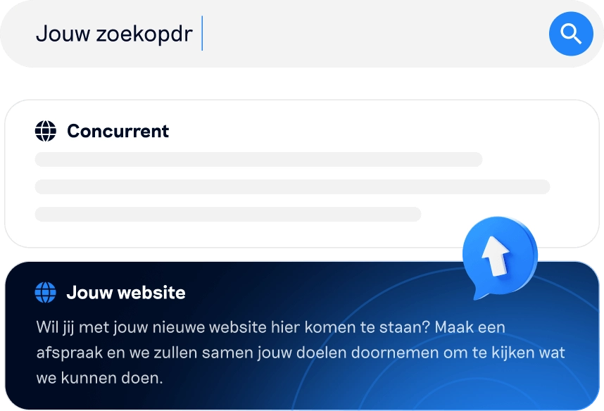

Teksten die scoren én overtuigen
We schrijven SEO teksten die precies aansluiten op wat je doelgroep zoekt. Daardoor stijg je in Google en stuur je bezoekers sneller richting contact of aankoop.
Staat je website online, maar blijven aanvragen of zichtbaarheid achter? Dan sluit je content waarschijnlijk nog niet goed aan op wat je doelgroep zoekt. Wij schrijven SEO-teksten die gebaseerd zijn op data, zoekintentie en structuur, zodat je beter vindbaar bent in Google, zichtbaar blijft in AI-zoekresultaten en bezoekers helpt om de volgende stap te zetten.
We komen graag bij je op de koffie ☕
We schrijven SEO teksten die precies aansluiten op wat je doelgroep zoekt. Daardoor stijg je in Google en stuur je bezoekers sneller richting contact of aankoop.
Elke tekst krijgt een logische opbouw met heldere koppen, sterke zoekwoordvariaties en interne links. Zo kan Google je pagina beter lezen, indexeren en hoger waarderen.
We schrijven zo duidelijk en concreet dat je content ook goed te gebruiken is in AI zoekresultaten. Zo word je sneller genoemd in antwoorden van tools zoals ChatGPT.

Een SEO tekst laten schrijven is dé manier om je website beter vindbaar te maken in Google én in AI zoekresultaten. Deze teksten hebben de juiste balans tussen zoekwoorden, structuur en inhoud, zodat zoekmachines en AI systemen direct begrijpen waar je pagina over gaat en bezoekers precies vinden wat ze zoeken.
SEO teksten laten schrijven door Profecta Solutions betekent kiezen voor strategische content in plaats van standaardvulling. We onderzoeken wat jouw doelgroep intypt, met welke intentie ze zoeken en welke vragen ze gesteld willen zien. Zo schrijven we content die hoog scoort in Google, wordt opgepakt door AI tools en in de praktijk leidt tot actie.
Bij Profecta Solutions combineren we die strategie met een menselijke schrijfstijl. Geen stijve zinnen vol zoekwoorden, maar natuurlijke teksten die informeren, overtuigen en aanzetten tot contact of aankoop.
Goede content vormt de basis van online groei. SEO teksten die aansluiten bij je doelgroep zorgen voor blijvende resultaten, in Google én in AI.
Meer organisch verkeer: je wordt zichtbaar bij relevante zoekopdrachten.
Betere bezoekerskwaliteit: je trekt mensen met een duidelijke koop of contactintentie.
Langdurig effect: een goede SEO tekst blijft maanden presteren.
Sterkere autoriteit: zoekmachines en bezoekers zien je als betrouwbare partij.
Extra zichtbaarheid in AI: je content wordt sneller gebruikt in AI antwoorden.
En dat is precies waar wij ons op richten: teksten die niet alleen gevonden worden, maar ook bijdragen aan groei.
Plan vrijblijvend jouw moment om te sparren.
Bij Profecta Solutions kun je elk type SEO tekst laten schrijven — van landingspagina tot blog of productbeschrijving. We zorgen dat elke tekst perfect aansluit op jouw doelen en doelgroep.
Gericht op conversie én vindbaarheid. We schrijven overtuigende teksten die bezoekers stap voor stap meenemen naar contact of aankoop.
Ideaal voor het aantrekken van oriënterende bezoekers. We creëren waardevolle content waarmee jij je expertise toont en autoriteit opbouwt in Google.
Voor webshops zijn dit de krachtigste SEO-pagina’s. We optimaliseren titels, structuur en beschrijvingen, zodat klanten sneller vinden wat ze zoeken en makkelijker kopen.
Een vaak onderschat onderdeel. We schrijven verhalen die vertrouwen wekken, jouw identiteit tonen en klanten overtuigen dat ze bij jou aan het juiste adres zijn.
Duidelijke, resultaatgerichte teksten die uitleggen wat je doet, waarom je beter bent dan de rest, en waarom iemand juist voor jouw bedrijf moet kiezen.
Elke tekst is maatwerk, afgestemd op jouw merk en doelgroep — met de juiste balans tussen vindbaarheid en overtuigingskracht.
We geloven niet in standaardteksten. Elk traject begint met een goed plan.
We starten met een gesprek om jouw bedrijf, doelgroep en doelen te leren kennen. Zo weten we precies wat je wilt bereiken met de teksten.
We analyseren zoekwoorden, intentie en concurrentie, plus veelgestelde vragen. Zo scoren je teksten in Google én in AI zoekresultaten.
Jij ontvangt de eerste versies van de teksten. We verwerken feedback zorgvuldig, zodat de inhoud volledig aansluit bij jouw verwachtingen.
We zorgen dat meta’s, koppen, links en opbouw technisch kloppen. Zo presteren je teksten optimaal in zoekmachines.
Zo krijg je niet zomaar teksten, maar een duurzame contentbasis die blijft presteren.
Even sparren kost je niets, maar levert vaak verrassend veel op.
Bij Profecta Solutions vind je alles onder één dak: strategie, tekst, techniek en marketing. Onze SEO-copywriters werken nauw samen met marketeers en webdevelopers, zodat elke tekst past binnen de technische structuur van je website en bijdraagt aan meetbare groei.
Daarom kies je voor Profecta Solutions:
Strategisch zoekwoordonderzoek vóór het schrijven
SEO-teksten die converteren en passen bij jouw merk
Eén vast aanspreekpunt en korte communicatielijnen
Teksten afgestemd op AI vindbaarheid, met heldere antwoorden en logische structuur
Continue optimalisatie en ondersteuning na publicatie
We schrijven niet voor zoekmachines, maar voor mensen — mét het algoritme in ons achterhoofd
De kosten van een SEO tekst laten schrijven hangt af van de lengte, complexiteit en het type tekst. Een korte SEO-pagina kun je vaak al laten schrijven vanaf €150,-, terwijl diepgaande landingspagina’s of strategische blogs tussen €250,- en €400,- liggen.
Wil je meerdere SEO teksten laten schrijven of een complete contentstrategie laten ontwikkelen? Dan maken we een maatwerkofferte op basis van jouw wensen. Je weet vooraf wat je betaalt, wat je krijgt en wanneer de tekst wordt opgeleverd — zonder verrassingen achteraf.
Je ontvangt binnen 1 werkdag een voorstel op maat.
Achter iedere tekst staat een team van ervaren specialisten. Onze SEO-copywriters zorgen voor inhoud die scoort in Google. Onze marketeers bewaken de strategie en de tone of voice, en onze developers zorgen dat alles technisch perfect aansluit op jouw website.
Samen creëren we content die niet alleen goed gelezen wordt, maar ook écht resultaat oplevert — in verkeer, zichtbaarheid en conversie.

SEO is een duurzame strategie — geen sprint, maar een marathon. Wanneer je SEO teksten laat schrijven, heeft Google tijd nodig om de nieuwe content te indexeren en te beoordelen. Gemiddeld zie je binnen 2 tot 4 maanden de eerste verbeteringen in je posities. Bij goed onderhouden websites (met een gezonde structuur en actieve linkbuilding) kan dat sneller gaan.
Het belangrijkste is consistentie: regelmatig nieuwe content plaatsen, bestaande pagina’s optimaliseren en je SEO-strategie blijven voeden. Zo bouw je stap voor stap autoriteit op — en die groeit met de tijd alleen maar verder.
We schrijven alle teksten zelf, met behulp van slimme tools — niet andersom. AI kan inspireren of helpen bij zoekwoordonderzoek, maar echte SEO teksten laten schrijven vraagt menselijke creativiteit, vakkennis en gevoel voor tone-of-voice.
Onze copywriters zorgen dat elke tekst uniek, natuurlijk en overtuigend is. We controleren alles handmatig op leesbaarheid, structuur en SEO-technische kwaliteit. Zo ben je zeker van content die niet generiek aanvoelt, maar echt aansluit op jouw merk en doelgroep.
Dat doen we via een zoekwoordonderzoek op maat. Voordat we ook maar één SEO tekst schrijven, analyseren we:
Waar je doelgroep op zoekt (zoekintentie en volume).
Welke termen je concurrenten gebruiken.
Waar kansen liggen die nog niet benut worden.
Daaruit volgt een strategische indeling van je website: welke pagina’s we schrijven, welke zoekwoorden waar thuishoren, en hoe we de onderlinge linkstructuur opbouwen. Zo krijg je geen losse teksten, maar een sterke SEO-basis die logisch is voor Google én prettig voor bezoekers.
Zelf schrijven is prima als je ervaring hebt met SEO en teksten goed kunt structureren. Maar een professionele SEO tekst laten schrijven bespaart je niet alleen tijd, het levert ook méér resultaat op.
Onze specialisten combineren copywriting, SEO-techniek en data-analyse. Ze weten precies hoe je zoekwoorden natuurlijk verwerkt, hoe je bezoekers langer op je pagina houdt en hoe je Google overtuigt dat jouw content het meest relevant is. Bovendien bewaken we jouw tone of voice, zodat de teksten herkenbaar blijven voor je klanten.
We starten elk traject met een inhoudelijke kennismaking. We bespreken je doelgroep, doelen en schrijfstijl, en vragen naar bestaande voorbeelden (zoals je website, nieuwsbrieven of social media).
Tijdens het schrijven passen we de tone of voice daar exact op aan. Of je nu kiest voor zakelijk en deskundig of juist persoonlijk en toegankelijk — jouw merkidentiteit blijft herkenbaar. Elke tekst wordt bovendien door een tweede specialist nagelezen voor stijlconsistentie en helderheid.
Zeker. Je hoeft niet altijd nieuwe content te laten schrijven — soms is het slimmer om bestaande pagina’s te verbeteren. We kunnen je huidige teksten analyseren op structuur, zoekwoorden, leesbaarheid en techniek.
Daarna herschrijven we ze tot volwaardige SEO-teksten: met een betere opbouw, interne links, duidelijke koppen en natuurlijk verwerkte zoekwoorden. Zo behoud je de kern van je boodschap, maar verbeter je je positie in Google én de gebruikservaring voor bezoekers.
Een gewone webtekst beschrijft wat je doet; een SEO tekst zorgt dat mensen je ook vinden. Bij SEO-teksten ligt de focus op relevantie, structuur en zoekintentie. We gebruiken de juiste trefwoorden, bouwen logische paragrafen en zorgen dat elke alinea waarde toevoegt voor de lezer.
Daarnaast optimaliseren we titels, meta descriptions, headers en interne links — allemaal elementen die Google helpen begrijpen waar je pagina over gaat. Het resultaat: je pagina stijgt in de zoekresultaten én overtuigt bezoekers om klant te worden.
We adviseren altijd om gebruik te maken van tools zoals Google Search Console en Google Analytics. Daarmee kun je zien:
Hoe vaak je pagina’s worden weergegeven in zoekresultaten.
Op welke zoekwoorden je scoort.
Hoeveel bezoekers doorklikken en converteren.
Bij Profecta Solutions helpen we je om die data te begrijpen. We laten zien welke teksten goed presteren, waar nog kansen liggen en hoe je de resultaten verder kunt verbeteren.
Een goede SEO tekst laten schrijven is stap één — stap twee is blijven meten en optimaliseren.
Ja — misschien wel méér dan ooit. AI-zoekmachines halen hun informatie uit betrouwbare websites met sterke content. Hoe beter jouw SEO-teksten zijn opgebouwd, hoe groter de kans dat jouw website wordt gebruikt als bron of getoond wordt in AI-antwoorden.
Daarom houden we bij Profecta Solutions rekening met AI-vindbaarheid: we schrijven SEO-teksten die logisch gestructureerd, inhoudelijk volledig en semantisch rijk zijn. Zo blijf je niet alleen zichtbaar in Google, maar ook in de zoekresultaten van de toekomst.
Omdat wij verder kijken dan de tekst alleen. Bij Profecta Solutions krijg je niet één schrijver, maar een compleet team: SEO-specialisten, copywriters, marketeers en webdevelopers. Samen zorgen we dat je teksten perfect aansluiten op je website, doelgroep en strategie.
We denken mee over de techniek, de interne linkstructuur en de contentstrategie op lange termijn. Zo haal je meer uit je investering — met teksten die niet alleen goed lezen, maar ook meetbaar bijdragen aan je online groei.
Wil je weten hoe sterke SEO-teksten jouw website kunnen versterken?
We kijken graag met je mee en brengen voor je in kaart:
welke content aansluit op het zoekgedrag van je doelgroep
waar teksten kansen laten liggen voor vindbaarheid en conversie
hoe SEO-teksten bijdragen aan meer relevante bezoekers en aanvragen
Benieuwd wat dit betekent voor jouw website en contentstrategie?
We denken graag met je mee.
Wil je weten hoe sterke SEO-teksten jouw website kunnen versterken?
We kijken graag met je mee en brengen voor je in kaart:
welke content aansluit op het zoekgedrag van je doelgroep
waar teksten kansen laten liggen voor vindbaarheid en conversie
hoe SEO-teksten bijdragen aan meer relevante bezoekers en aanvragen
Benieuwd wat dit betekent voor jouw website en contentstrategie?
We denken graag met je mee.